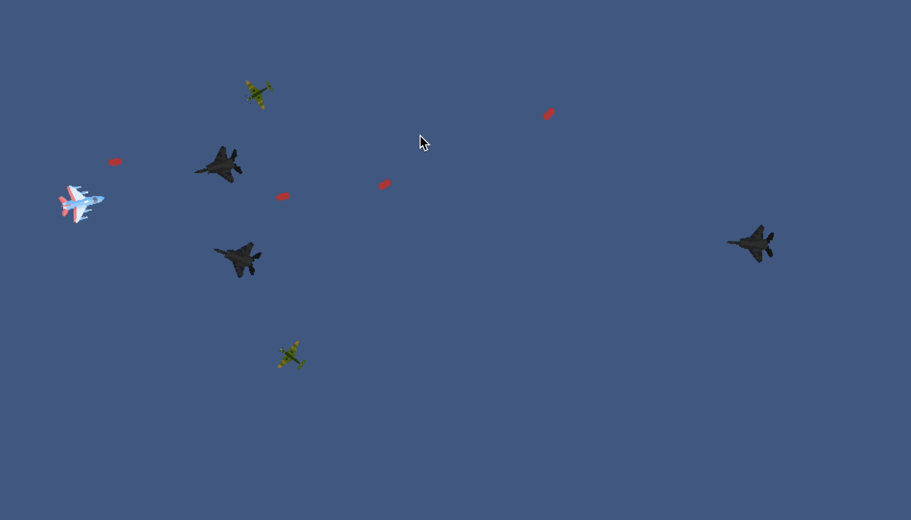

EXAMEN
GAME DESIGN DOCUMENT

Nombre: Jonathan Salazar
Materia: Desarrollo de Juegos Interactivos
Título del juego: Alas de Fuego
Género:
Shooter 2D / Arcade / Supervivencia
Plataforma:
PC (Unity 2D)
Público objetivo:
Jugadores casuales y fanáticos de la aviación histórica, de 12 años en adelante.
1. HISTORIA DEL JUEGO
Durante los años finales de la Segunda Guerra Mundial, un piloto de la fuerza aliada se ve atrapado tras las líneas enemigas. Su escuadrón ha sido destruido y solo le queda su viejo avión de combate. Rodeado por escuadrones enemigos, debe abrirse paso en el cielo mientras evade los ataques aéreos y destruye a sus perseguidores.
En una misión que parecía suicida, su valentía y habilidad serán su única esperanza de sobrevivir… y volver a casa.
2. JUGABILIDAD
Objetivo principal:
Sobrevivir el mayor tiempo posible mientras se destruyen enemigos y se esquivan colisiones.
Controles:
- WASD: Mover el avión del jugador.
- Mouse: Apuntar la dirección del avión.
- Clic Izquierdo: Disparar.
Mecánicas clave:
- Movimiento libre en 2D.
- Disparo automático o semiautomático hacia la dirección del mouse.
- Los enemigos buscan colisionar con el jugador.
- El jugador puede destruir enemigos con disparos.
- Si el jugador colisiona con un enemigo, pierde (explosión y fin del juego).
- El juego se detiene al morir.
Sistema de colisiones:
- Enemigos usan colisión física (OnCollisionEnter2D).
- El jugador tiene un Collider2D y Rigidbody2D.
- Si un enemigo colisiona con el jugador:
- Ambos explotan.
- El sprite del jugador cambia a una explosión.
- El juego se pausa.
Progresión:
- Los enemigos aparecen de forma continua (spawning con tiempo).
- Cada minuto aumenta la velocidad o cantidad de enemigos.
3. ELEMENTOS DEL JUEGO
Jugador:
- Sprite: Avión de guerra clásico.
- Componente: Rigidbody2D, BoxCollider2D, Script de movimiento/disparo.
- Explosión: Cambia el sprite a una imagen de explosión al morir.
Enemigos:
- Sprite: Aviones enemigos.
- Componente: Rigidbody2D, Collider2D, Script de seguimiento al jugador.
- Inteligencia básica: Se mueven hacia el jugador y colisionan.
- Al morir: Desaparecen (destruyen GameObject).
Balas:
- Prefab disparado desde el jugador.
- Velocidad fija.
- Al colisionar con enemigos, los destruye.
4. ARTE Y SONIDO
Estilo visual:
- Estética pixel art o dibujo 2D de época.
- Fondos de color sólido.
Efectos visuales:
- Explosiones al morir.
- Disparos visibles.
- Destellos y explosiones al colisionar.
Sonido:
5. ESCALABILIDAD
Ideas futuras:
- Sistema de vidas o escudos.
- Power-ups (velocidad, disparos múltiples).
- Modo historia con niveles y jefes.
- Aviones desbloqueables.
- Multijugador local o cooperativo.
6. NOTAS FINALES
Inspiración:
- Clásicos arcade como 1942 o Raiden.
- Elementos modernos de supervivencia.
Tono:
- Heroico, desafiante, inmersivo.